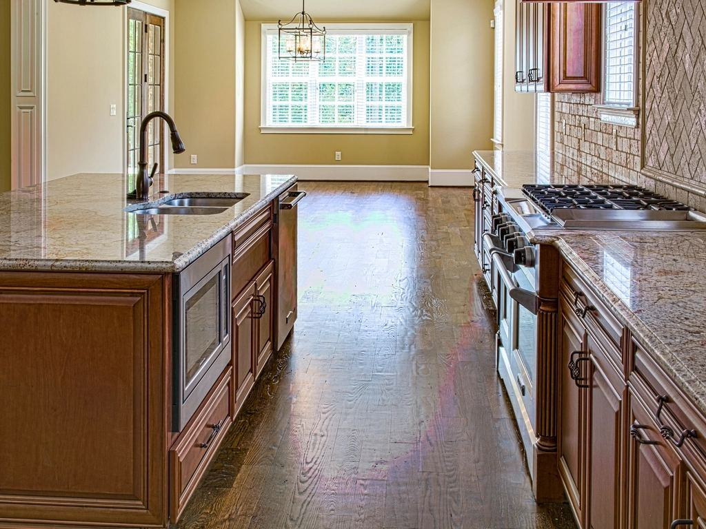
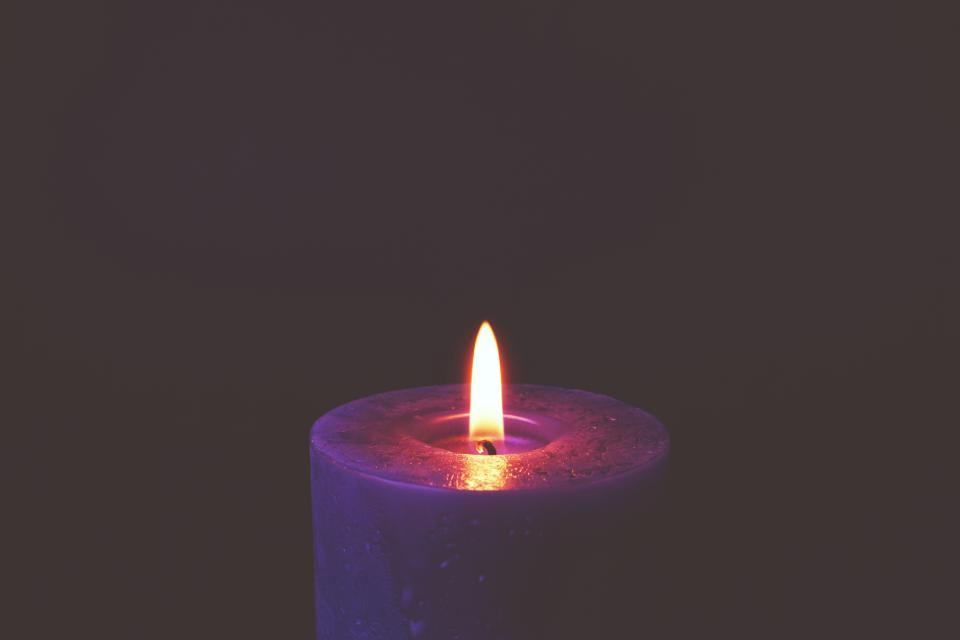
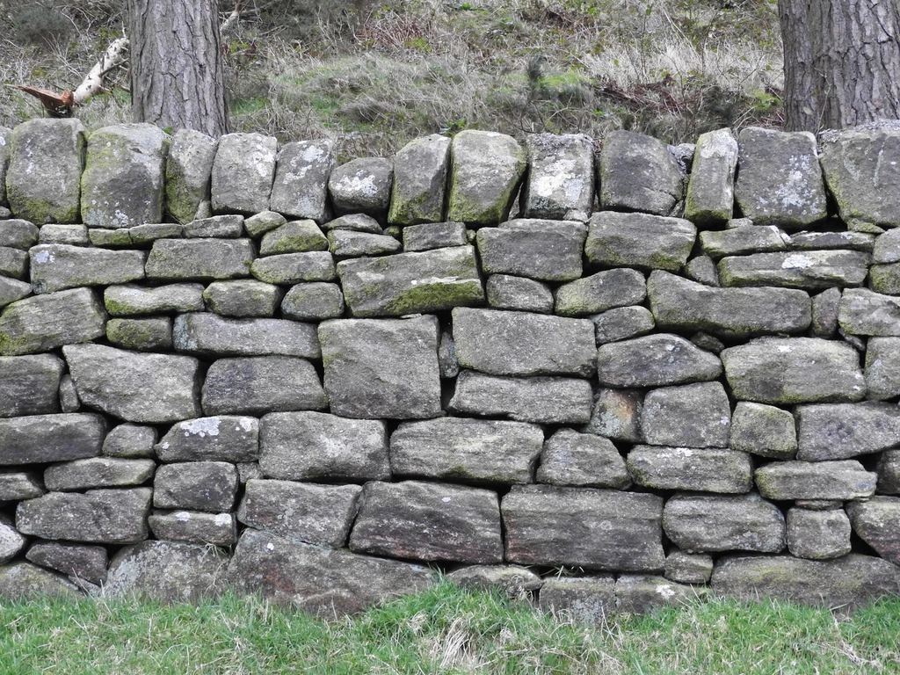

Tjänster
Porfyr är hårdare än granit och slits nästan inte alls, men den är långsam att bearbeta. En polerad bordsskiva tar oss tre veckor. Vi har valt att bara arbeta i den här stenen – den finns ingen annanstans i världen med samma färger.
Vad vill du göra i porfyr?

Möbler och inredning
Bordsskivor och fönsterbänkar är hälften av vår produktion. Varje skiva sågas ur ett block som vi har valt i brottet och poleras i sex steg med diamant.
Leveranstiden är åtta till tolv veckor, och vi skickar med pall till hela Sverige.

Gravvårdar
En gravsten i porfyr behåller sin polering i hundra år, vilket gör den populär hos familjer med rötter i Dalarna. Vi hugger texten för hand eller med sandblästring.
Vi monterar själva i Älvdalen, Mora och Orsa och skickar färdiga stenar till övriga landet.

Konst och offentliga miljöer
Vi har gjort fontäner, minnesstenar och skulpturer i samarbete med konstnärer och kommuner. Lisa sköter tekniska beräkningar och fästen.
Vi tar ett offentligt verk per år, för att resten av verkstaden ska hinna med.

Konservering
Lisa är utbildad stenkonservator och tar uppdrag från museer, hembygdsgårdar och privatpersoner med äldre porfyrföremål. Vi lagar sprickor med pigmenterad epoxi som matchar stenen.
Varje åtgärd dokumenteras i en rapport med före- och efterbilder.
Från block till blank yta
- 1

Prover och samtal
Vi skickar slipade prover eller tar emot dig i verkstaden. Porfyr skiftar så mycket att du bör se den med egna ögon.
- 2

Välj blocket
Vi fotograferar två eller tre lämpliga block och visar var skivan kommer att sitta i stenen.
- 3

Sågning och slip
Sågen går långsamt i porfyr – en meter skivkant tar en timme. Sedan följer sex polersteg.
- 4

Leverans
Vi packar på egen pall och skickar med fraktbolag, eller levererar själva i Dalarna.
Hantverk med papper på
- Gesällbrev stenslipningPer-Erik och två av sliparna har gesällbrev, utfärdade via Hantverksrådet.
- KonservatorsexamenLisa Mattsson är utbildad stenkonservator vid Göteborgs universitet.
- Hemslöjdens hantverksregisterVerkstaden är upptagen i Dalarnas Hemslöjdsförbunds register över yrkeshantverkare.
- Medlem i StenindustriförbundetMedlem sedan 1994 och följer förbundets riktlinjer för gravvårdar.